Research log June
jliucx
2025-6-1
Last updated: 2025-07-22
Checks: 5 2
Knit directory: Getting_started/
This reproducible R Markdown analysis was created with workflowr (version 1.7.1.1). The Checks tab describes the reproducibility checks that were applied when the results were created. The Past versions tab lists the development history.
The R Markdown is untracked by Git. To know which version of the R Markdown file created these results, you’ll want to first commit it to the Git repo. If you’re still working on the analysis, you can ignore this warning. When you’re finished, you can run wflow_publish to commit the R Markdown file and build the HTML.
Great job! The global environment was empty. Objects defined in the global environment can affect the analysis in your R Markdown file in unknown ways. For reproduciblity it’s best to always run the code in an empty environment.
The command set.seed(20240712) was run prior to running the code in the R Markdown file. Setting a seed ensures that any results that rely on randomness, e.g. subsampling or permutations, are reproducible.
Great job! Recording the operating system, R version, and package versions is critical for reproducibility.
Nice! There were no cached chunks for this analysis, so you can be confident that you successfully produced the results during this run.
Using absolute paths to the files within your workflowr project makes it difficult for you and others to run your code on a different machine. Change the absolute path(s) below to the suggested relative path(s) to make your code more reproducible.
| absolute | relative |
|---|---|
| /project/xuanyao/jiaming/Getting_started | . |
| /project/xuanyao/jiaming/Getting_started/output/simulation/our_acat_comparison_upgraded_debuged | output/simulation/our_acat_comparison_upgraded_debuged |
| /project/xuanyao/jiaming/Getting_started/output/simulation/our_acat_comparison_upgraded_debuged/50%_with_effect_seed_random_p8/0.15 | output/simulation/our_acat_comparison_upgraded_debuged/50%_with_effect_seed_random_p8/0.15 |
| /project/xuanyao/jiaming/Getting_started/output/simulation/our_acat_comparison_upgraded_debuged/15%_with_effect_seed_random_p8/0.15 | output/simulation/our_acat_comparison_upgraded_debuged/15%_with_effect_seed_random_p8/0.15 |
| /project/xuanyao/jiaming/Getting_started/output/simulation/our_acat_comparison_upgraded_debuged_p3 | output/simulation/our_acat_comparison_upgraded_debuged_p3 |
| /project/xuanyao/jiaming/Getting_started/output/simulation/normal_cor_0.1_official_our_acat_comparison_simulation_3000_no_approximation | output/simulation/normal_cor_0.1_official_our_acat_comparison_simulation_3000_no_approximation |
| /project/xuanyao/jiaming/Getting_started/output/simulation/LRT_oracle_0.1_3000_no_approximation | output/simulation/LRT_oracle_0.1_3000_no_approximation |
| /project/xuanyao/jiaming/Getting_started/output/simulation/normal_cor_0.3_official_our_acat_comparison_simulation_3000_no_approximation | output/simulation/normal_cor_0.3_official_our_acat_comparison_simulation_3000_no_approximation |
| /project/xuanyao/jiaming/Getting_started/output/simulation/LRT_oracle_0.3_3000_no_approximation | output/simulation/LRT_oracle_0.3_3000_no_approximation |
| /project/xuanyao/jiaming/Getting_started/output/simulation/normal_cor_0.5_official_our_acat_comparison_simulation_approximation | output/simulation/normal_cor_0.5_official_our_acat_comparison_simulation_approximation |
| /project/xuanyao/jiaming/Getting_started/output/simulation/only_maxstat_normal_cor_0.1_official_our_acat_comparison_simulation_3000_no_approximation | output/simulation/only_maxstat_normal_cor_0.1_official_our_acat_comparison_simulation_3000_no_approximation |
| /project/xuanyao/jiaming/Getting_started/output/simulation/only_maxstat_normal_cor_0.3_official_our_acat_comparison_simulation_3000_no_approximation | output/simulation/only_maxstat_normal_cor_0.3_official_our_acat_comparison_simulation_3000_no_approximation |
| /project/xuanyao/jiaming/Getting_started/output/simulation/only_maxstat_normal_cor_0.8_official_our_acat_comparison_simulation_3000_no_approximation | output/simulation/only_maxstat_normal_cor_0.8_official_our_acat_comparison_simulation_3000_no_approximation |
| /project/xuanyao/jiaming/Getting_started/output/simulation/only_power1_normal_cor_0.1_official_our_acat_comparison_simulation_3000_no_approximation | output/simulation/only_power1_normal_cor_0.1_official_our_acat_comparison_simulation_3000_no_approximation |
| /project/xuanyao/jiaming/Getting_started/output/simulation/only_power1_normal_cor_0.3_official_our_acat_comparison_simulation_3000_no_approximation | output/simulation/only_power1_normal_cor_0.3_official_our_acat_comparison_simulation_3000_no_approximation |
| /project/xuanyao/jiaming/Getting_started/output/simulation/only_power1_normal_cor_0.8_official_our_acat_comparison_simulation_3000_no_approximation | output/simulation/only_power1_normal_cor_0.8_official_our_acat_comparison_simulation_3000_no_approximation |
| /project/xuanyao/jiaming/Getting_started/output/simulation/maxstat_power1_normal_cor_0.1_official_our_acat_comparison_simulation_3000_no_approximation | output/simulation/maxstat_power1_normal_cor_0.1_official_our_acat_comparison_simulation_3000_no_approximation |
| /project/xuanyao/jiaming/Getting_started/output/simulation/maxstat_power1_normal_cor_0.3_official_our_acat_comparison_simulation_3000_no_approximation | output/simulation/maxstat_power1_normal_cor_0.3_official_our_acat_comparison_simulation_3000_no_approximation |
| /project/xuanyao/jiaming/Getting_started/output/simulation/maxstat_power1_normal_cor_0.8_official_our_acat_comparison_simulation_3000_no_approximation | output/simulation/maxstat_power1_normal_cor_0.8_official_our_acat_comparison_simulation_3000_no_approximation |
| /project/xuanyao/jiaming/Getting_started/output/simulation/top_power1_normal_cor_0.1_official_our_acat_comparison_simulation_3000_no_approximation | output/simulation/top_power1_normal_cor_0.1_official_our_acat_comparison_simulation_3000_no_approximation |
| /project/xuanyao/jiaming/Getting_started/output/simulation/top_power1_normal_cor_0.8_official_our_acat_comparison_simulation_3000_no_approximation | output/simulation/top_power1_normal_cor_0.8_official_our_acat_comparison_simulation_3000_no_approximation |
| /project/xuanyao/jiaming/Getting_started/output/simulation/normal_cor_0.3_official_our_acat_comparison_simulation_3000_no_approximation/5%_with_effect_seed_random_p2/0.12/combined_test_tensor/combined_test_tensor_chunk_99.rds | output/simulation/normal_cor_0.3_official_our_acat_comparison_simulation_3000_no_approximation/5%_with_effect_seed_random_p2/0.12/combined_test_tensor/combined_test_tensor_chunk_99.rds |
| /project/xuanyao/jiaming/Getting_started/output/simulation/normal_cor_0.3_official_our_acat_comparison_simulation_3000_no_approximation/5%_with_effect_seed_random_p2/0.12/max_statistics/max_statistics_chunk_99.rds | output/simulation/normal_cor_0.3_official_our_acat_comparison_simulation_3000_no_approximation/5%_with_effect_seed_random_p2/0.12/max_statistics/max_statistics_chunk_99.rds |
Great! You are using Git for version control. Tracking code development and connecting the code version to the results is critical for reproducibility.
The results in this page were generated with repository version f09f0e2. See the Past versions tab to see a history of the changes made to the R Markdown and HTML files.
Note that you need to be careful to ensure that all relevant files for the analysis have been committed to Git prior to generating the results (you can use wflow_publish or wflow_git_commit). workflowr only checks the R Markdown file, but you know if there are other scripts or data files that it depends on. Below is the status of the Git repository when the results were generated:
Ignored files:
Ignored: .Rhistory
Ignored: .Rproj.user/
Ignored: analysis/run.sh
Ignored: analysis/run_R.sh
Untracked files:
Untracked: .snakemake/
Untracked: Snakefile
Untracked: analysis/research_log_July.Rmd
Untracked: analysis/sceptre_singleton.R
Untracked: analysis/sceptre_singleton.Rmd
Untracked: analysis/sceptre_threshold.Rmd
Untracked: code/back_upfunctions_optimized.R
Untracked: code/crt_sample.cpp
Untracked: code/debug.Rmd
Untracked: code/draft.Rmd
Untracked: code/find_gene_set.Rmd
Untracked: code/fit_skew_normal.cpp
Untracked: code/functions_optimized.R
Untracked: code/general_data_optimized.R
Untracked: code/nature_data_edit.Rmd
Untracked: code/parallel/
Untracked: code/plots_generator.Rmd
Untracked: code/rcc_err/
Untracked: code/rcc_jobs/
Untracked: code/rcc_out/
Untracked: code/remove_cis_optimize.R
Untracked: code/run_R_caslake.sh
Untracked: code/sceptre/
Untracked: code/simulation.Rmd
Untracked: code/t_test.cpp
Untracked: code/utilizer/
Untracked: config/
Untracked: data/
Untracked: logs/
Untracked: output/Morris/
Untracked: output/Xie/
Untracked: output/debug/
Untracked: output/nature/
Untracked: output/newest/
Untracked: output/repologle/
Untracked: output/simulation/
Untracked: output/snakemake/
Untracked: run_snakemake.sh
Untracked: scripts/
Untracked: snake_program/
Untracked: snakemake_benchmarks/
Untracked: snakemake_profile/
Untracked: temp/
Unstaged changes:
Modified: analysis/new_model.Rmd
Deleted: analysis/reseach_log_May.Rmd
Modified: analysis/research_log.Rmd
Modified: analysis/research_log_June.Rmd
Modified: analysis/research_log_May.Rmd
Deleted: code/functions.R
Deleted: code/plot.Rmd
Modified: code/run_R.sh
Deleted: code/startover.R
Note that any generated files, e.g. HTML, png, CSS, etc., are not included in this status report because it is ok for generated content to have uncommitted changes.
These are the previous versions of the repository in which changes were made to the R Markdown (analysis/research_log_July.Rmd) and HTML (docs/research_log_July.html) files. If you’ve configured a remote Git repository (see ?wflow_git_remote), click on the hyperlinks in the table below to view the files as they were in that past version.
| File | Version | Author | Date | Message |
|---|---|---|---|---|
| html | 6d9232f | jliucx | 2025-07-10 | add system comparison of MVN |
| html | be80bf6 | jliucx | 2025-07-09 | Publish updated log.html |
1 June 28 : Updated Simulation
Description: 1. replace conditional resampling by permutation (both sceptre and ours) 2. adjust sparsity to 0, 1%, 5%, 15%, 25%, 50% 3. compare bars: sceptre (permutation) + ACAT; 3000 ours + t; 3000 wilcoxon +t + ACAT; sceptre individual+BH; 3000 ours+ normal 4. increase negative control pairs
# A tibble: 31 × 7
Group ACAT_length max_normal_length max_t_length wilcox_normal_length
<chr> <int> <int> <int> <int>
1 0%_0.04 4881 4881 4881 4881
2 10%_0.04 499 499 499 499
3 10%_0.06 503 503 503 503
4 10%_0.08 493 493 493 493
5 10%_0.1 490 490 490 490
6 10%_0.12 486 486 486 486
7 10%_0.15 489 489 489 489
8 15%_0.04 488 488 488 488
9 15%_0.06 481 481 481 481
10 15%_0.08 474 474 474 474
# ℹ 21 more rows
# ℹ 2 more variables: wilcox_t_length <int>, sceptre_bonfer_length <int>Warning: Using `size` aesthetic for lines was deprecated in ggplot2 3.4.0.
ℹ Please use `linewidth` instead.
This warning is displayed once every 8 hours.
Call `lifecycle::last_lifecycle_warnings()` to see where this warning was
generated.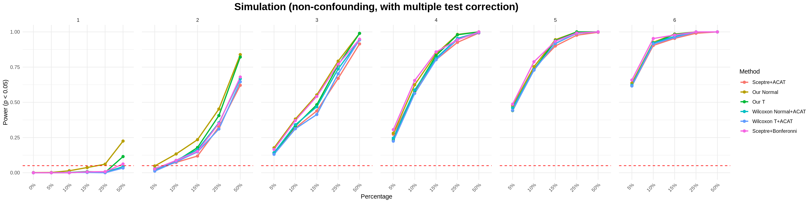
| Version | Author | Date |
|---|---|---|
| be80bf6 | jliucx | 2025-07-09 |
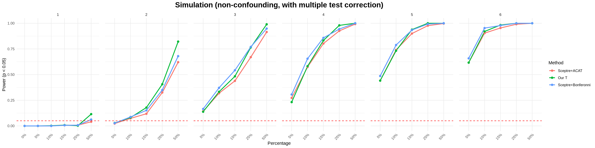
| Version | Author | Date |
|---|---|---|
| be80bf6 | jliucx | 2025-07-09 |
p1 <-gg_qqplot(grouped_vectors$`0%_0.04`$ACAT,title="Simulation: Sceptre+ACAT")
p2 <- gg_qqplot(grouped_vectors$`0%_0.04`$max_normal,title="Our normal")
p3 <-gg_qqplot(grouped_vectors$`0%_0.04`$max_t,title="Our t")
p4<-gg_qqplot(grouped_vectors$`0%_0.04`$wilcox_normal,title="Wilcoxon Normal + ACAT")
p5<-gg_qqplot(grouped_vectors$`0%_0.04`$wilcox_t, title = "Wilcoxon T + ACAT")
grid.arrange(p1,p2,p3,p4,p5,ncol=3)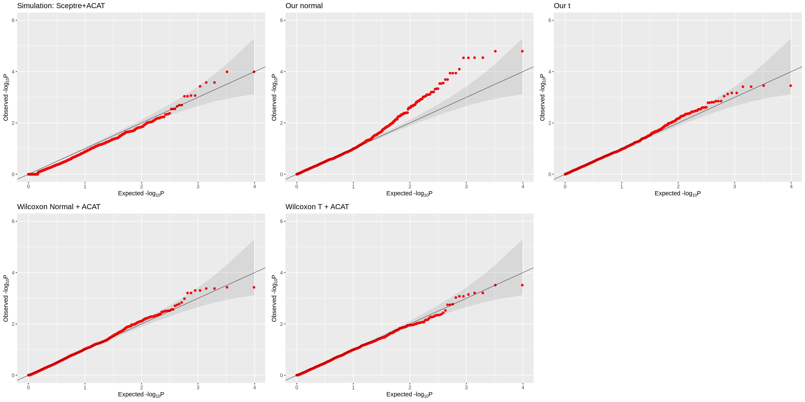
| Version | Author | Date |
|---|---|---|
| be80bf6 | jliucx | 2025-07-09 |
2 July 1
Registered S3 method overwritten by 'httr':
method from
print.response rmutilWarning: 'timedatectl' indicates the non-existent timezone name 'n/a'unable to deduce timezone name from 'America/Chicago'── Attaching packages ─────────────────────────────────────── tidyverse 1.3.1 ──✔ forcats 0.5.1 ── Conflicts ────────────────────────────────────────── tidyverse_conflicts() ──
✖ data.table::between() masks dplyr::between()
✖ gridExtra::combine() masks dplyr::combine()
✖ Matrix::expand() masks tidyr::expand()
✖ dplyr::filter() masks stats::filter()
✖ data.table::first() masks dplyr::first()
✖ dplyr::lag() masks stats::lag()
✖ data.table::last() masks dplyr::last()
✖ Matrix::pack() masks tidyr::pack()
✖ MASS::select() masks dplyr::select()
✖ purrr::transpose() masks data.table::transpose()
✖ Matrix::unpack() masks tidyr::unpack()NULLdo.call(grid.arrange,
c(plot_list, ncol = 5))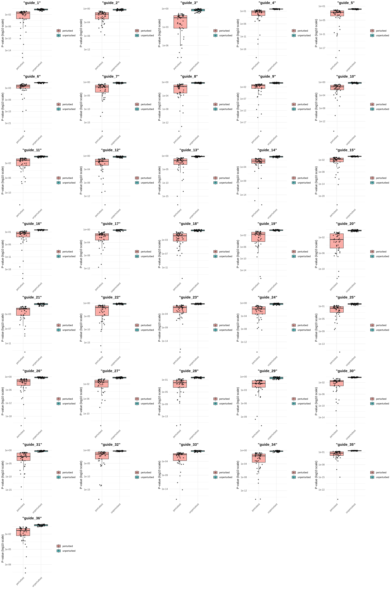
| Version | Author | Date |
|---|---|---|
| be80bf6 | jliucx | 2025-07-09 |
NULLlibrary(gridExtra)
do.call(grid.arrange,
c(plot_list, ncol = 5))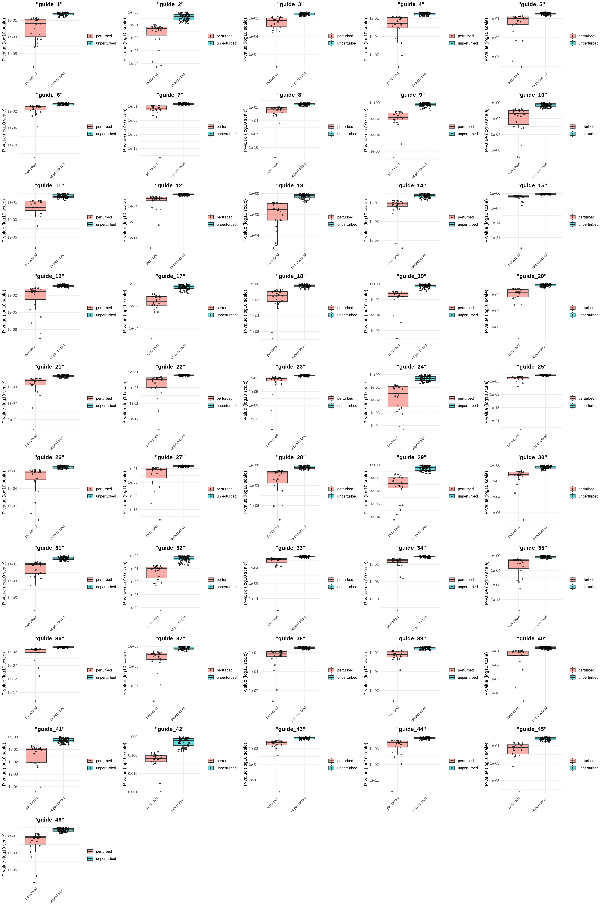
| Version | Author | Date |
|---|---|---|
| be80bf6 | jliucx | 2025-07-09 |
3 July 2 : Simulation including wilcoxon (t) +Bonferonni, sceptre+Truncated ACAT
print(lengths_summary)# A tibble: 31 × 9
Group ACAT_length max_normal_length max_t_length wilcox_normal_length
<chr> <int> <int> <int> <int>
1 0%_0.04 2727 2727 2727 2727
2 10%_0.04 502 502 502 502
3 10%_0.045 515 515 515 515
4 10%_0.05 500 500 500 500
5 10%_0.055 494 494 494 494
6 10%_0.06 509 509 509 509
7 15%_0.04 489 489 489 489
8 15%_0.045 495 495 495 495
9 15%_0.05 485 485 485 485
10 15%_0.055 488 488 488 488
# ℹ 21 more rows
# ℹ 4 more variables: wilcox_t_length <int>, sceptre_bonfer_length <int>,
# wilcoxon_bonfer_length <int>, acat_truncate_length <int>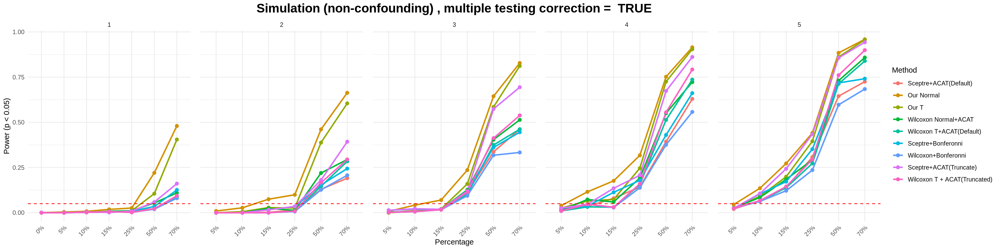
| Version | Author | Date |
|---|---|---|
| be80bf6 | jliucx | 2025-07-09 |
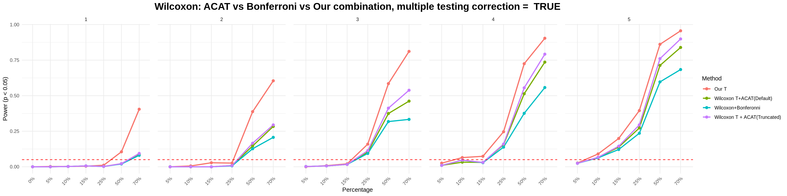
| Version | Author | Date |
|---|---|---|
| be80bf6 | jliucx | 2025-07-09 |
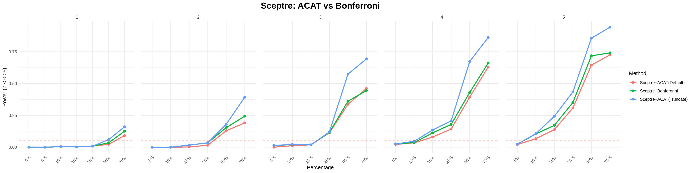
| Version | Author | Date |
|---|---|---|
| be80bf6 | jliucx | 2025-07-09 |
4 July 5 : Simulation using MVN model
4.1 cor=0.1
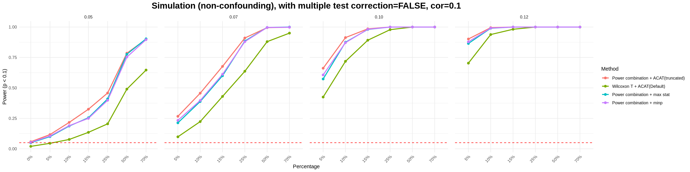
p3 <-gg_qqplot(grouped_vectors$`0%_0.05`$max_t,title="Our power combination + max stat")
p4<-gg_qqplot(grouped_vectors$`0%_0.05`$wilcox_t_bonf,title="our power combination + ACAT")
grid.arrange(p3,p4,ncol=2)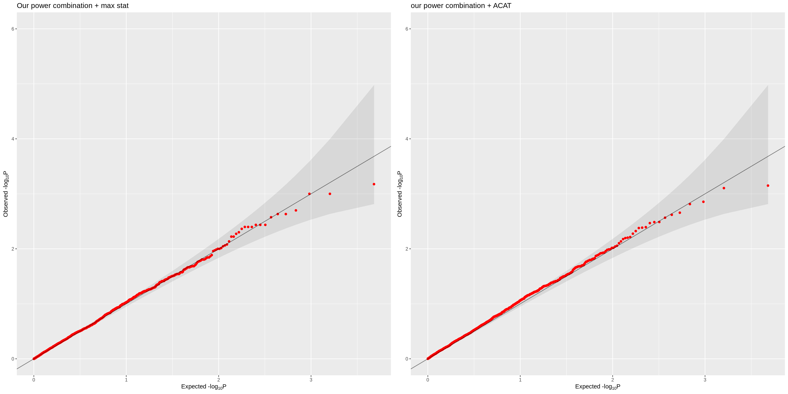
| Version | Author | Date |
|---|---|---|
| be80bf6 | jliucx | 2025-07-09 |
4.2 cor=0.3
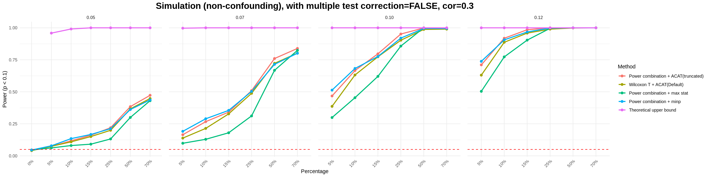
p3 <-gg_qqplot(grouped_vectors$`0%_0.05`$max_t,title="power combination + maxstat")
p4<-gg_qqplot(grouped_vectors$`0%_0.05`$wilcox_t_bonf,title="power combination + ACAT")
grid.arrange(p3,p4,ncol=2)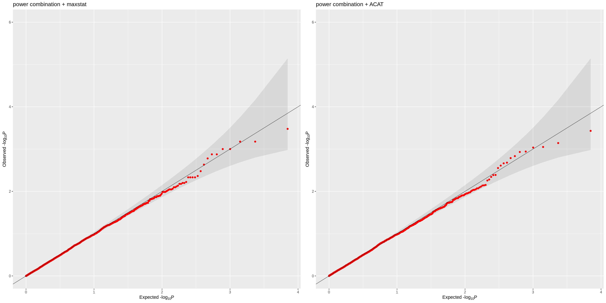
| Version | Author | Date |
|---|---|---|
| be80bf6 | jliucx | 2025-07-09 |
4.3 cor=0.5
print(lengths_summary)# A tibble: 25 × 4
Group wilcox_t_bonf_length max_t_length wilcox_t_length
<chr> <int> <int> <int>
1 0%_0.05 549 549 549
2 10%_0.05 140 140 140
3 10%_0.07 129 129 129
4 10%_0.1 124 124 124
5 10%_0.12 124 124 124
6 15%_0.05 136 136 136
7 15%_0.07 122 122 122
8 15%_0.1 119 119 119
9 15%_0.12 119 119 119
10 25%_0.05 125 125 125
# ℹ 15 more rows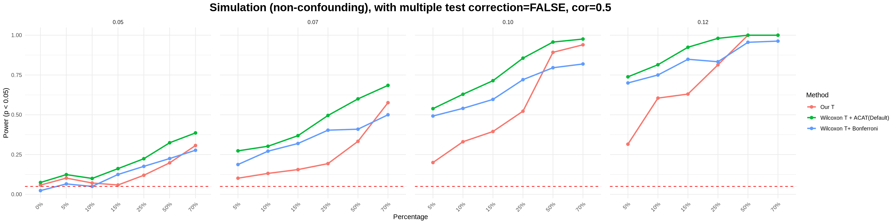
| Version | Author | Date |
|---|---|---|
| be80bf6 | jliucx | 2025-07-09 |
4.4 cor=0.1, max stat only
4.5 cor=0.3, max stat only
4.6 cor=0.8, max stat only
4.7 cor=0.1, sum stat only
4.8 cor=0.3, sum stat only
4.9 cor=0.8, sum stat only
4.10 cor=0.1, sum stat + max stat
4.11 cor=0.3, sum stat + max stat
4.12 cor=0.8, sum stat + max stat
4.13 cor=0.1, sum top stat
4.14 cor=0.8, sum top stat
5 July 10: Systematic comparison of MVN simulation
5.1 Combine max and sum
5.1.1 cor=0.1
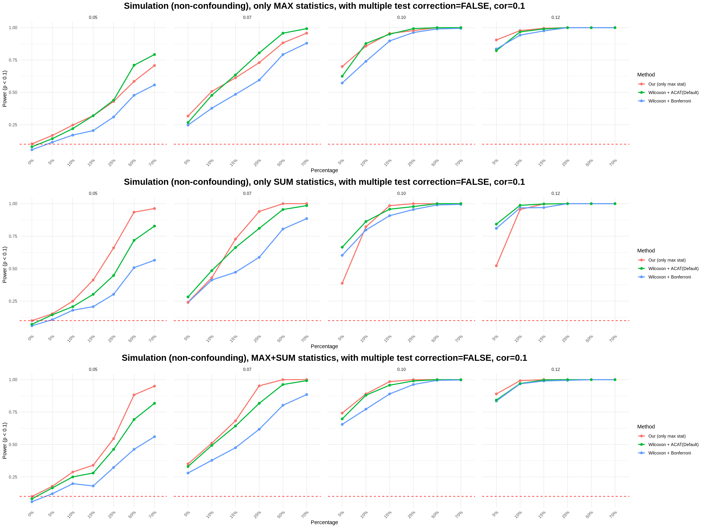
| Version | Author | Date |
|---|---|---|
| 6d9232f | jliucx | 2025-07-10 |
Max performs best when signal is sparse, sum performs best when signal is dense
The best case: combination of Max and Sum gives the better power than individual

5.2 Sum vs top sum
5.2.1 cor=0.1
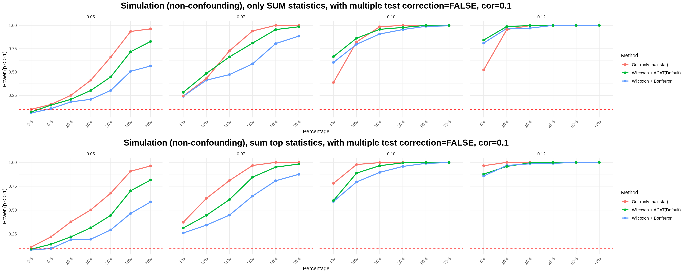
top sum performs much better than sum, when the signal is sparse.5.2.2 cor=0.8
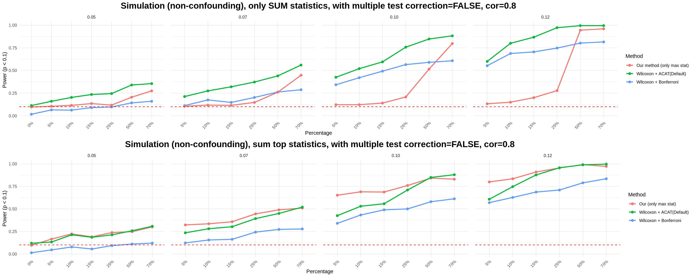
top sum is less sensitive to signal sparsity5.3 Power change across correlation
5.3.1 max stat
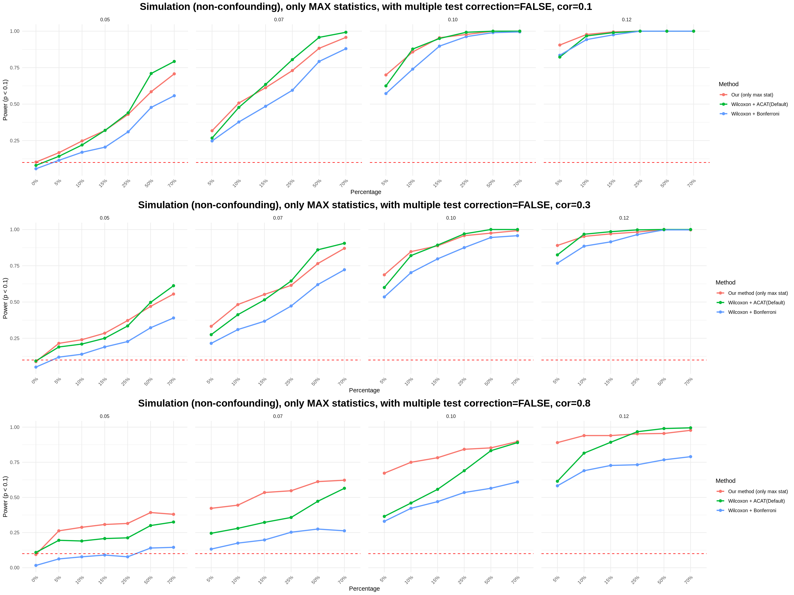
1. MAX stat is relative stable to signal density
2. Unlike Bonferroni and ACAT, MAX stat is stable to correlation change
5.3.2 sum

sum performs best when signal is dense but weak, and it is very sensitive to density and correlation between genes.
5.4 Empirical evidence for power loss after combine different powers
I chose a very sparse but strong signal setting, such that “maxstat” will give the best power, and “sum” will be powerless. And it turns out as expected that it is the powerless “sum” that makes our omnibus test less powerful than individual “maxstat” test.
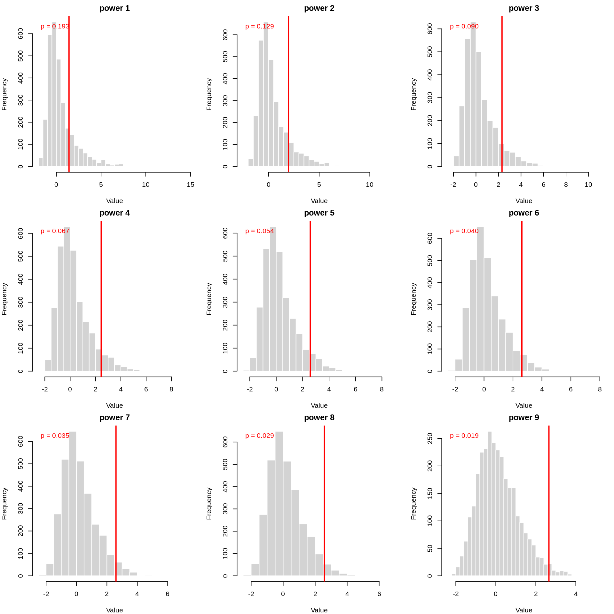
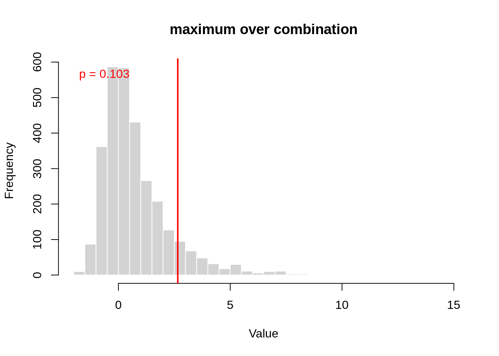
sessionInfo()R version 4.1.0 (2021-05-18)
Platform: x86_64-pc-linux-gnu (64-bit)
Running under: CentOS Linux 8
Matrix products: default
BLAS/LAPACK: /software/openblas-0.3.13-el8-x86_64/lib/libopenblas_skylakexp-r0.3.13.so
locale:
[1] LC_CTYPE=en_US.UTF-8 LC_NUMERIC=C
[3] LC_TIME=en_US.UTF-8 LC_COLLATE=en_US.UTF-8
[5] LC_MONETARY=en_US.UTF-8 LC_MESSAGES=en_US.UTF-8
[7] LC_PAPER=en_US.UTF-8 LC_NAME=C
[9] LC_ADDRESS=C LC_TELEPHONE=C
[11] LC_MEASUREMENT=en_US.UTF-8 LC_IDENTIFICATION=C
attached base packages:
[1] grid parallel stats graphics grDevices utils datasets
[8] methods base
other attached packages:
[1] forcats_0.5.1 tidyverse_1.3.1 stringr_1.5.1
[4] purrr_1.0.2 speedglm_0.3-5 biglm_0.9-3
[7] DBI_1.2.3 MASS_7.3-60 ACAT_0.91
[10] eulerr_7.0.2 gridExtra_2.3 heavytailcombtest_1.0.0
[13] sgt_2.0 numDeriv_2016.8-1.1 optimx_2025-4.9
[16] peakRAM_1.0.2 BH_1.84.0-0 Matrix_1.6-3
[19] sceptredata_0.99.0 sceptre_0.10.0 presto_1.0.0
[22] data.table_1.14.8 Rcpp_1.0.12 tidyr_1.3.0
[25] tibble_3.2.1 readr_1.4.0 dplyr_1.1.4
[28] ggplot2_3.5.1
loaded via a namespace (and not attached):
[1] fs_1.6.3 lubridate_1.7.10 httr_1.4.2 rprojroot_2.0.4
[5] tools_4.1.0 backports_1.4.1 bslib_0.7.0 utf8_1.2.1
[9] R6_2.5.1 colorspace_2.1-0 withr_2.5.2 tidyselect_1.2.0
[13] compiler_4.1.0 git2r_0.32.0 rvest_1.0.0 cli_3.6.1
[17] xml2_1.3.2 labeling_0.4.3 sass_0.4.10 scales_1.3.0
[21] mvtnorm_1.3-3 digest_0.6.33 rmarkdown_2.27 pkgconfig_2.0.3
[25] htmltools_0.5.8.1 dbplyr_2.1.1 fastmap_1.1.1 invgamma_1.1
[29] highr_0.11 rlang_1.1.2 readxl_1.3.1 rstudioapi_0.15.0
[33] jquerylib_0.1.4 farver_2.1.1 generics_0.1.3 jsonlite_1.8.7
[37] magrittr_2.0.3 munsell_0.5.0 fansi_1.0.5 lifecycle_1.0.4
[41] stringi_1.6.2 whisker_0.4.1 yaml_2.2.1 promises_1.2.0.1
[45] crayon_1.5.2 lattice_0.22-5 haven_2.4.1 hms_1.1.0
[49] knitr_1.48 pillar_1.9.0 rmutil_1.1.10 reprex_2.0.0
[53] glue_1.6.2 evaluate_0.23 modelr_0.1.8 vctrs_0.6.4
[57] nloptr_1.2.2.2 httpuv_1.6.1 cellranger_1.1.0 gtable_0.3.0
[61] assertthat_0.2.1 cachem_1.0.8 xfun_0.52 broom_0.7.8
[65] pracma_2.4.4 later_1.2.0 workflowr_1.7.1.1 ellipsis_0.3.2